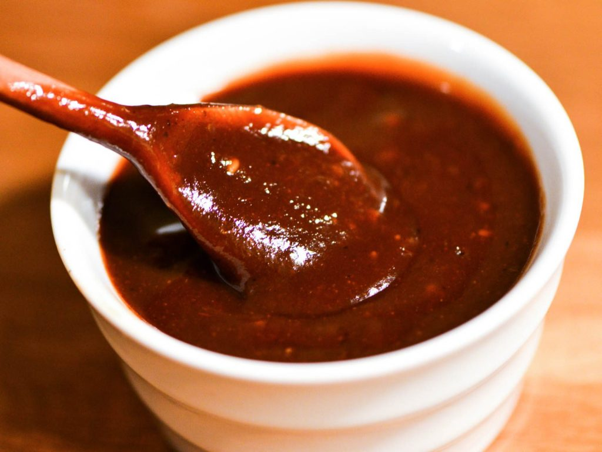

Ancho BBQ Sauce

Description
This sauce is a sweet, fruity, and tangy sauce that works well with most smoked meats.
I particularly love this sauce with a smoked pork belly.
it is simple and easy to make and totally worth it.
I hope that you enjoy it!
Recipe Card
Ingrediants
- 6 Quarts Ketchup
- 2 Quarts Dr Pepper
- 1 Cup Brown Sugar
- 1/2 Cup Worcestershire Sauce
- 2 TBSP Granulated Garlic
- 2 TBSP Granulated Onion
- 1/4 Cup Ancho Paste
- 1/2 Cup Orange Juice
- Zest from one orange
Directions
- Combine all ingrediants in a large pot.
- Simmer on low heat for 30-45 minutes